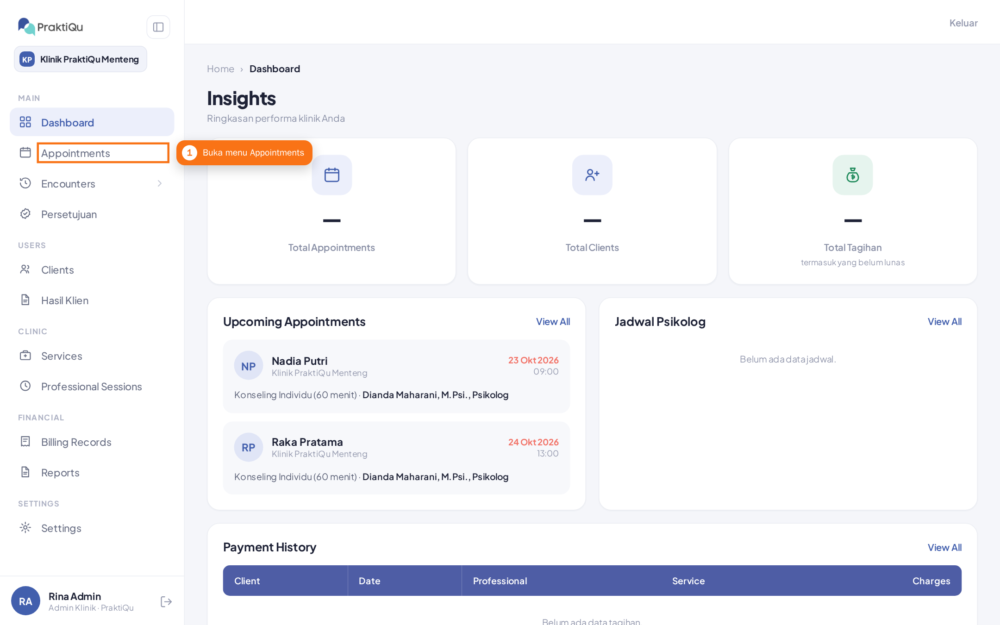
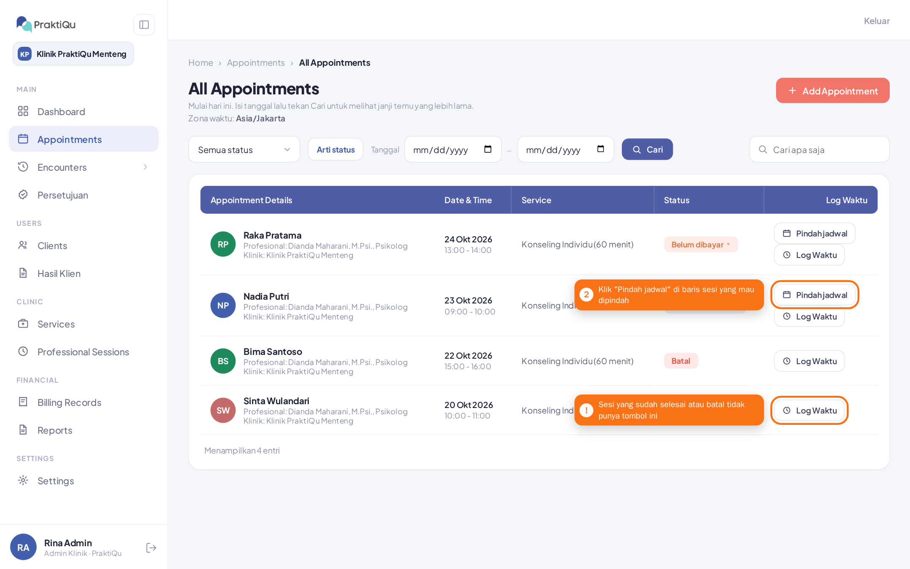
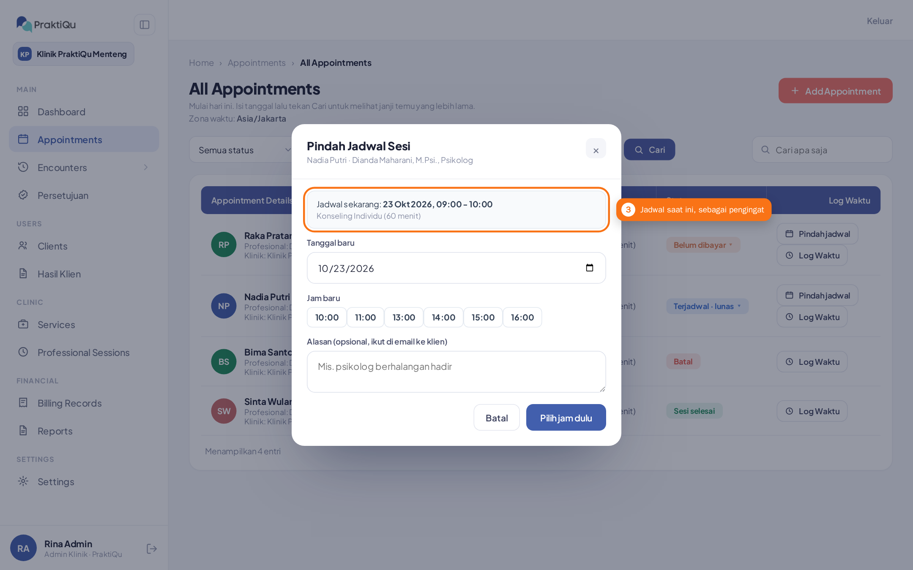
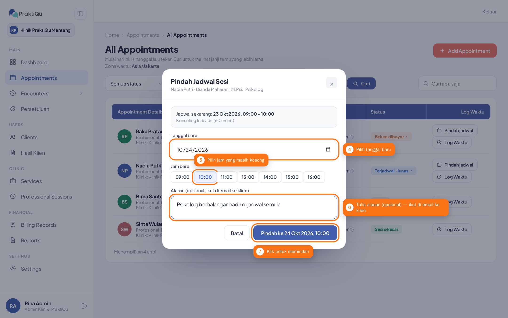
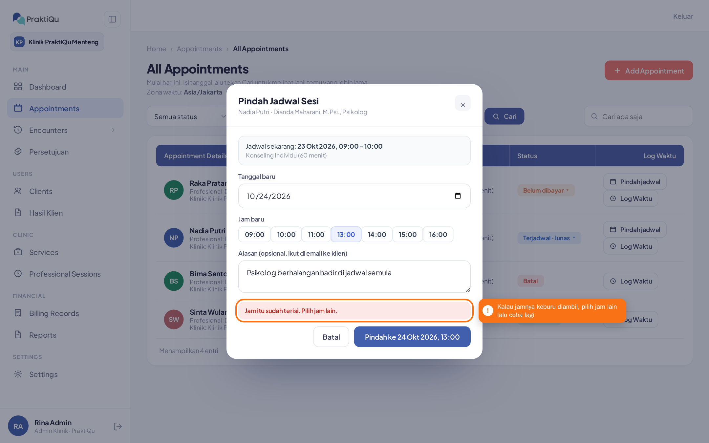
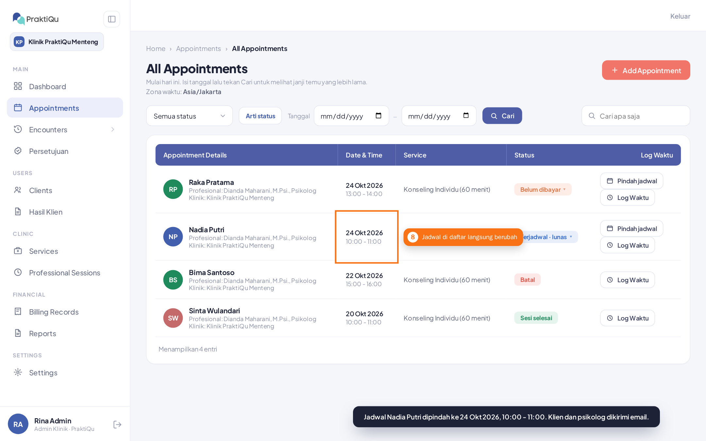
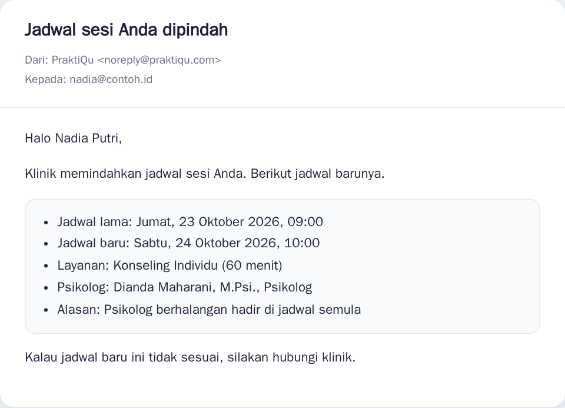

Pindah Jadwal Sesi
Cara memindah sesi klien ke tanggal atau jam lain, langsung dari daftar janji temu. Sesinya tidak dibatalkan: pembayaran, status, dan persetujuannya tetap.
Admin klinik dan resepsionis (sesi di kliniknya), serta psikolog untuk sesinya sendiri.
Yang masih Terjadwal atau Menunggu (belum dibayar / menunggu persetujuan), dan belum dimulai.
Psikolog, layanan, durasi, pembayaran, dan nomor sesinya.
Langkah-langkah
Buka menu Appointments
Di menu kiri, klik Appointments untuk membuka daftar semua janji temu.

Klik "Pindah jadwal" di baris sesinya
Tombol Pindah jadwal ada di kolom paling kanan, di atas "Log Waktu". Sesi yang sudah selesai atau dibatalkan tidak punya tombol ini.

Periksa jadwal sekarang
Jendela Pindah Jadwal Sesi terbuka dan menampilkan jadwal sesi saat ini beserta layanannya. Jam yang sedang dipakai sesi ini tidak ditawarkan lagi.

Pilih tanggal, jam, dan tulis alasannya
Pilih tanggal baru; daftar jam yang masih kosong untuk psikolog dan layanan ini langsung muncul. Pilih jam baru, tulis alasan bila perlu (alasan ikut dikirim ke email klien), lalu klik tombol Pindah ke ….

Kalau jamnya keburu diambil
Jam bisa saja dipesan orang lain sebelum Anda menekan tombol. Sistem menolaknya, dan tidak ada yang berubah. Pilih jam lain lalu tekan tombolnya lagi.

Selesai
Jendela tertutup, muncul konfirmasi di bawah layar, dan jadwal di daftar langsung berubah. Tidak perlu memuat ulang halaman.

Yang terjadi otomatis setelah dipindah
- Klien dan psikolog dikirimi email berisi jadwal lama, jadwal baru, layanan, dan alasan (bila diisi).
- Pengingat sesi ikut pindah ke jadwal baru (24 jam dan 1 jam sebelum sesi).
- Event Google Meet / Google Calendar ikut diperbarui bila sesi itu punya event. Bila link Meet berganti, link barunya ikut tercantum di email klien.
- Pembayaran, status, dan persetujuan psikolog tidak berubah.

Kalau muncul pesan ini
| Pesan | Artinya dan yang perlu dilakukan |
|---|---|
| Jam itu sudah terisi. Pilih jam lain. | Jam itu baru saja dipesan sesi lain. Pilih jam lain. |
| Sesi ini baru saja diubah. Muat ulang halaman lalu coba lagi. | Ada staf lain yang mengubah sesi ini setelah halaman Anda dibuka. Muat ulang halaman supaya melihat keadaan terbaru. |
| Sesi ini sudah di jam itu. Pilih tanggal atau jam lain. | Tanggal dan jam yang dipilih sama dengan jadwal sekarang. |
| Jam itu sudah lewat. Pilih jam yang akan datang. | Pilih tanggal dan jam di masa depan. |
| Psikolog tidak praktik di tanggal atau jam itu. Pilih jadwal lain. | Tanggal itu hari libur psikolog atau klinik. |
| Sesi ini sudah dimulai, jadi jadwalnya tidak bisa dipindah. | Jam mulai sesi sudah lewat. Gunakan check-in/check-out atau batalkan sesinya. |
| Hanya sesi yang terjadwal atau menunggu yang bisa dipindah. | Sesi itu sudah dibatalkan, sudah check-in, atau sudah selesai. |
| Peran Anda tidak berwenang memindah jadwal sesi ini. | Psikolog hanya bisa memindah sesinya sendiri; staf hanya sesi di kliniknya. |
| Jadwal psikolog sedang diproses. Coba lagi sebentar lagi. | Ada pemesanan lain untuk psikolog yang sama pada saat bersamaan. Tunggu beberapa detik lalu coba lagi. |
| Sistem belum mengonfirmasi perpindahannya. Muat ulang halaman untuk melihat jadwal terbaru. | Sambungan ke sistem terputus. Muat ulang halaman dan periksa jadwalnya sebelum mencoba lagi, supaya tidak dipindah dua kali. |